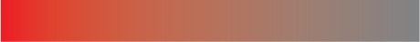

About color theory
Hue

ค่าสี ซึ่งเป็นสมบัติเฉพาะตัวของสีนั้นๆ เป็นสีพื้นที่มี saturation และ brightness ในระดับปกติ จะไม่มีการเติมสีอื่นเข้าไปผสม อาทิเช่น สีแดง สีน้ำเงิน หรือสีเขียว เเต่ในส่วนของสีอย่าง ขาว เทา และดำ จัดเป็น Achromatic colour ซึ่งไม่นับว่าเป็น Hue
Saturation
Saturation หรือ Chroma คือค่าความอิ่มตัวของสี และระดับของ saturation เป็นการไล่ระดับจากสีที่มีความอ่อน-เข้มเข้าหาหรือออกจากสีเทา โดยสีที่มีความอิ่มตัวน้อยที่สุดคือสีเทา จึงมีค่า saturation เท่ากับศูนย์ ดังนั้นการเติมสีเทาให้เเก่สีต่างๆ นั้นทำให้สีมีความสดใสลดลง และลดความอิ่มตัวลง ดังนั้น ค่า saturation ยิ่งมีค่าน้อยๆ ยิ่งมีความหม่นมากขึ้น เนื่องจากมีการเจือสีเทาเข้าไปผสมมากขึ้นนั่นเอง
Brightness

Brightness หรือ value คือค่าที่แสดงความสว่างหรือทึบของสี การปรับค่า brightness เปรียบเป็นการผสมสีขาวหรือสีดำเข้าไปเพิ่มหรือลดความสว่างให้กับสี โดยที่สีขาวคือสีที่มี brightness สูงที่สุดและสีดำก็เป็นสีที่มีค่า brightness ต่ำที่สุด ส่วนสีอื่นๆ จะมีความสว่างและทึบ หรือสีขาวและดำผสมกันตามอัตราส่วนต่างๆ เช่น สีชมพู มีสีขาวปนอยู่มากกว่าสีแดง (ทำให้สีชมพูมีค่า brightness สูงกว่าสีแดง) และสีแดงมีค่า brightness ที่สูงกว่าสีน้ำตาล